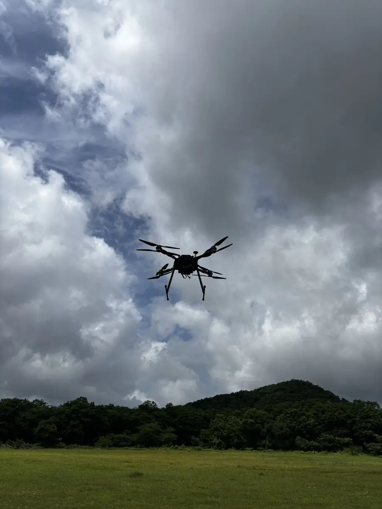

Home / Problems We Solve / GPS jamming and spoofing
DefenceWhen GPS is jammed, the drone must still fly the mission
Satellite signals are easy to jam, spoof or block, and a drone that depends on them can drift or be lost.
Defence, border security and teams flying near sensitive sites.
The aircraft drifts, lands in the wrong place or is lost, and the mission ends early.
Navigation that keeps working from on-board sensors when satellite data can’t be trusted.
Why do drones lose GPS, and what happens next?
Most drones trust satellite navigation completely. In a contested area, or simply in a deep valley, that signal can disappear or lie. The aircraft then loses its position just when the team needs it most.
GPS and other satellite signals are very weak by the time they reach the ground. A small transmitter can drown them out, and a false signal can convince a drone that it is somewhere else. Terrain and buildings can cause similar trouble with no adversary at all.
What happens next depends on the aircraft. Many drones hover, drift, land or try to fly home using bad data. For surveillance or defence work, that can end the mission or lose the aircraft.
Who faces this problem
Defence units
Contested areas are where jamming is most likely, and where losing an aircraft costs the most.
Border and security forces
Patrols near borders and sensitive sites can meet interference with little warning.
Teams in difficult terrain
Valleys, dense cities and heavy structures can weaken satellite signals with no jammer present.
Signs you have this problem
- Your drone drifts or shows position warnings in certain areas
- Flights fail or end early near borders or sensitive sites
- The drone behaves unpredictably in valleys or dense urban areas
- Your mission plan has no answer for what happens if GPS is lost
What to look for
- Automatic fallback when satellite data is degraded or spoofed
- Visual-inertial odometry for position hold and route following
- Sensor fusion across several independent sensors
- Return-to-home that does not need a satellite lock
The main causes
Jamming
A nearby transmitter drowns out the weak satellite signal, so the drone has no position fix.
Spoofing
A false signal tells the drone it is somewhere else, and it flies the wrong way with full confidence.
Blockage
Valleys, forests and buildings block or reflect the signal, even with no adversary around.
Before and after
How to solve it, step by step
- 1
Sense
Camera, motion, barometer, optical-flow and range sensors run all the time.
- 2
Fuse
Readings are blended so no single sensor can mislead the aircraft.
- 3
Switch
When GNSS is degraded or spoofed, the on-board estimate takes over.
- 4
Finish
The drone completes its route or returns home without a satellite lock.
Common mistakes
- Testing only in open areas with a strong satellite signal
- Assuming return-to-home will work when the position data is wrong
- Treating jamming and spoofing as the same problem
- Leaving GPS loss out of operator training and mission plans
Questions to ask a supplier
- What exactly does the aircraft do when GPS is lost?
- How does it detect a false signal, not just a missing one?
- How has this been tested, and in what conditions?
- How far does position accuracy drift over time without GPS?
What to use
Common questions
What is the difference between GPS jamming and spoofing?
Jamming blocks the satellite signal, so the drone knows it has no fix. Spoofing sends a false signal, so the drone may believe a wrong position, which can be harder to detect.
Can a drone fly without GPS?
Yes, if it has GPS-denied navigation. It estimates its own movement from on-board sensors such as a camera, motion sensors, barometer, optical flow and a rangefinder.
Which Decouvertes drones support GPS-denied navigation?
Our Products page lists GPS-denied navigation for Vision 2.0, Vision 3.0 and Vision 4.0.
What does a drone do when it loses GPS?
It depends on the aircraft. Many hover, drift, land or try to return home. A drone with GPS-denied navigation keeps estimating its position from on-board sensors, which gives the operator more options.
Do visual navigation systems work at night or over water?
They can struggle where the camera sees little detail, such as darkness, fog or open water. That is why fusing several sensors matters. Ask any supplier how their system behaves in your conditions.
Related problems
Too much ground, too few eyes
Borders, pipelines and large sites are too long to cover on foot or from fixed posts alone.
Read this guideCorrecting artillery fire safely
Seeing where rounds land usually means putting a person at risk, and passing corrections back takes time.
Read this guideBattery limits on overwatch
Every free-flying drone must come down to recharge, which leaves a gap in what you can see.
Read this guideFacing this problem?
Tell us about your mission and our engineers will suggest the right platform or configuration.